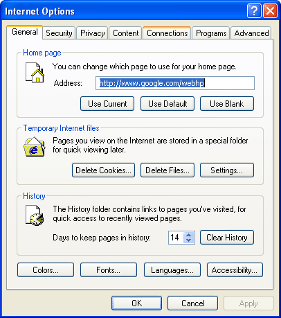
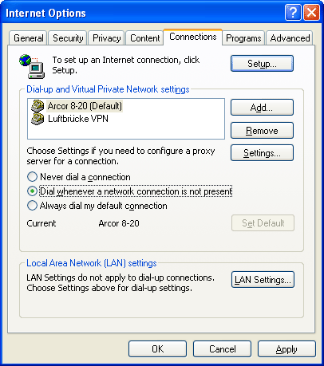

Proxy settings for browsers: Internet Explorer
JonDos suggests the preconfigured, portable JonDoFox for secure anonymous web browsing. The Internet Explorer, however, is regarding anonymity, badly configurable and rates less secure than most of the other browsers.
To set up JonDo for Internet Explorer nevertheless, do the following steps:
1.) From the menu "Tools", choose the submenu "Internet Options...". The settings window opens.

2.) Choose the "Connections" tab.

3.1) Modem or ISDN: If you use a modem to connect to the internet, first choose your internet connection under the Dial-up and Virtual Private Network settings section. Then, click on the "Settings..." button.
3.2) DSL, cable, or some other form of direct internet connection: Click the "LAN Settings..." button under the Local Area Network (LAN) settings section.
4.) In the window that is now opened, select the checkbox "Use a proxy server for this connection" (or "Use a proxy server for your LAN") and enter "127.0.0.1" as the proxy server and "4001" as the port.

If you want specify addresses where JonDo shall not be used, klick Advanced and enter those exceptions into the field Exceptions, separated by semicolons.
Please note that such exceptions can be managed in a more flexible way using Proxomitron.
Note: If you set a different listener port in JonDo, you'll have to enter this port here too, rather than 4001.